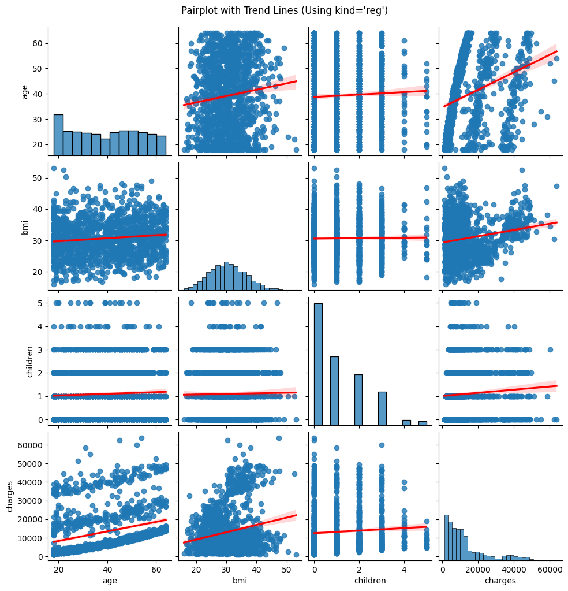
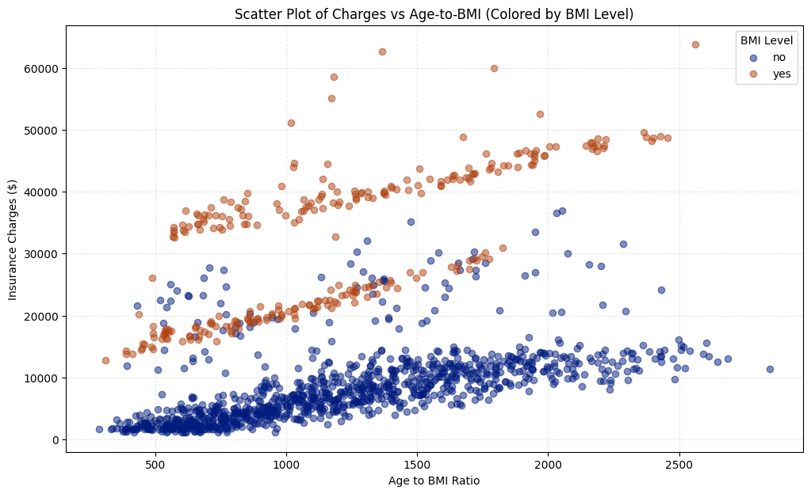
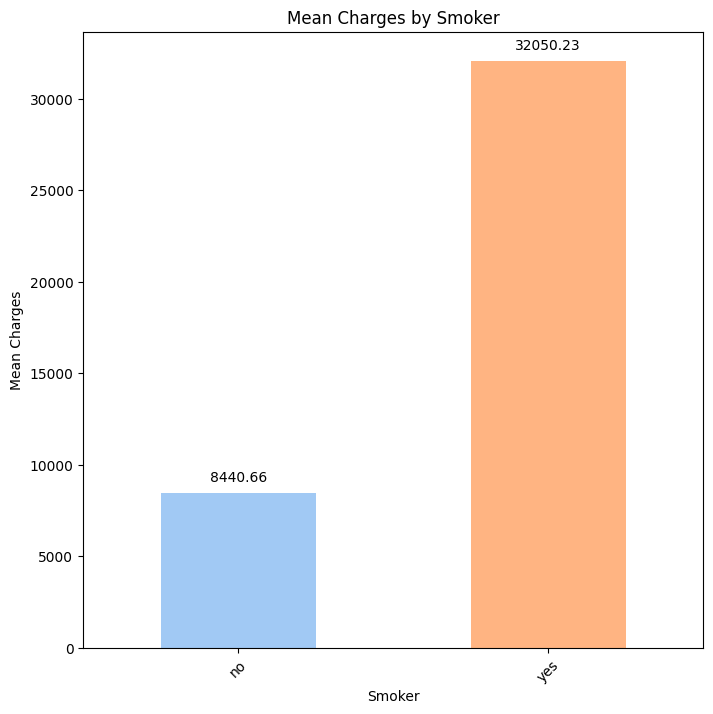
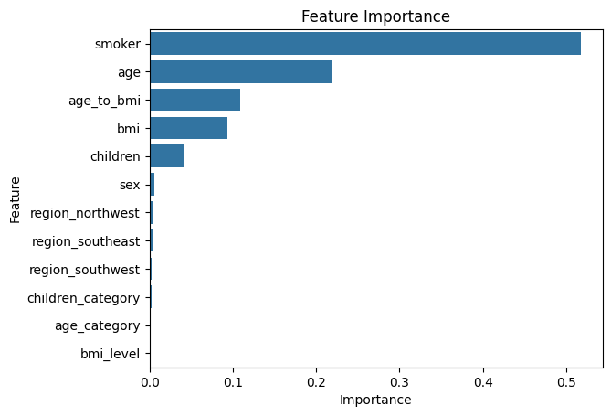
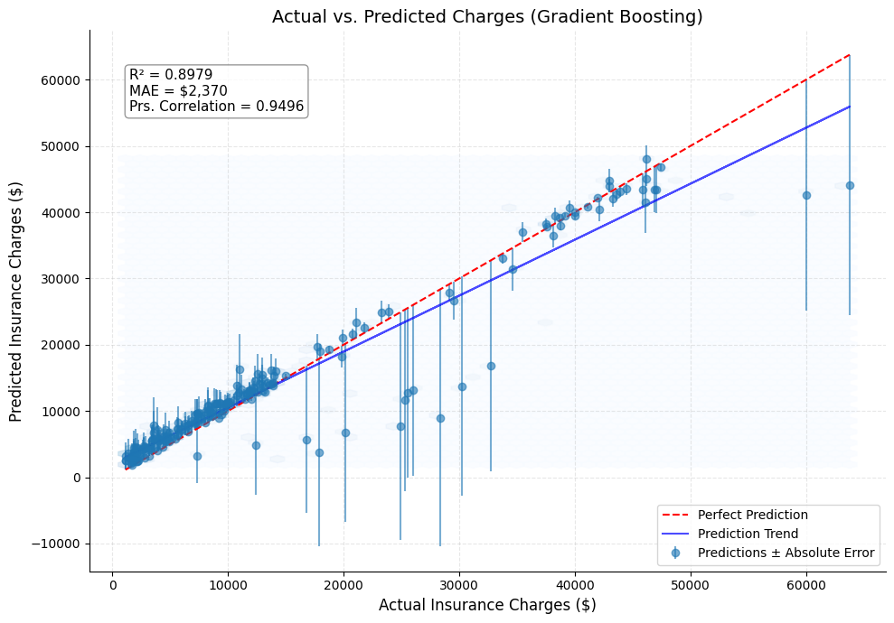

En tant qu'ingénieur logiciel en transition vers l'analyse de données, j'ai choisi ce projet pour appliquer un éventail complet de compétences en science des données à un problème commercial tangible. Prédire les coûts d'assurance ne nécessite pas seulement de construire un modèle, mais aussi une analyse exploratoire approfondie, une ingénierie des fonctionnalités réfléchie et une communication claire de l'impact commercial.
Aperçu en 30 secondes : Ce projet aborde le défi de la tarification inexacte des primes d'assurance. En utilisant un modèle de régression par apprentissage automatique, j'ai analysé des facteurs démographiques et de santé clés pour prédire les frais médicaux. Le modèle final peut expliquer 90 % de la variance des frais, identifiant le tabagisme, l'IMC et l'âge comme les principaux inducteurs de coûts. Cela permet une approche de tarification basée sur les données qui est à la fois compétitive et rentable.
Dans le secteur de l'assurance, une tarification inexacte des primes constitue un risque commercial important. La surtarification entraîne une perte d'avantage concurrentiel et une perte de clientèle, tandis que la sous-tarification se traduit par des manques à gagner et une instabilité financière. L'entreprise avait besoin d'une méthode fiable et basée sur les données pour prédire les frais médicaux individuels afin de fixer des prix justes, compétitifs et alignés sur le risque. Cette analyse visait les équipes de souscription et de stratégie de tarification pour les aider à automatiser et à affiner leurs processus de prise de décision.
L'analyse a utilisé un ensemble de données public de Kaggle contenant 1 338 enregistrements de bénéficiaires d'assurance. Les données étaient propres, avec un seul enregistrement en double supprimé. Une caractéristique clé était la distribution très asymétrique à droite de la variable cible, charges, qui a nécessité une transformation logarithmique pour normaliser les données pour la modélisation.

Mon approche a suivi un flux de travail structuré en science des données axé sur la génération d'informations commerciales exploitables :
age_to_bmi pour capturer l'effet cumulatif des facteurs de risque, que les modèles linéaires manqueraient.GridSearchCV pour l'optimisation des hyperparamètres. Pour gérer les caractéristiques des données, j'ai appliqué une transformation logarithmique à la variable cible et utilisé une pondération des échantillons pour garantir que le modèle accorde de l'attention aux sinistres de grande valeur (mais rares).L'analyse a produit plusieurs visualisations clés qui racontent une histoire claire sur les moteurs des coûts d'assurance.




Pour une exploration plus approfondie et interactive des données, veuillez consulter le rapport Power BI intégré ci-dessous.
Les principales conclusions peuvent être retracées à des scénarios réels clairs :
Utilisez le modèle pour des devis automatisés en temps réel sur les polices standard (prévues à moins de 20 000 $) mais signalez les prévisions de grande valeur pour un examen obligatoire par un souscripteur humain. Cela équilibre la vitesse et la précision.
Créez des parcours de souscription distincts. Les profils à faible risque peuvent être accélérés, tandis que les profils à haut risque (par exemple, les fumeurs plus âgés avec un IMC élevé) déclenchent un processus d'examen plus approfondi et dirigé par des experts.
Pour les polices dont la prévision se situe dans la fourchette supérieure, ajoutez automatiquement une marge de risque calculée à la prime. Cela atténue de manière proactive le risque financier lié à la tendance connue du modèle à sous-estimer ces cas.
La mise en œuvre de ces recommandations pourrait générer des avantages financiers et opérationnels importants :
charges) était très asymétrique, violant les hypothèses de la régression. log1p pour normaliser la distribution, ce qui a stabilisé le modèle et amélioré sa puissance prédictive.sample_weight lors de l'entraînement, forçant le modèle à accorder plus d'attention à ces points de données de grande valeur et réduisant le biais de sous-prédiction.age_to_bmi m'a appris l'importance d'utiliser les connaissances du domaine pour représenter des relations complexes et non linéaires dans les données.